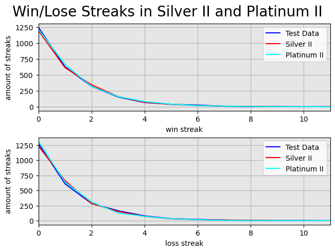

Losers Queue
My initial main goal for this project was to analyze the myth of the "Losers Queue", along with some other information. First of all, I needed players with a win rate of about 50% and enough games to analyze. I decided to look into the games of Platinum and Silver players who had a win rate of ~45-55%.
From here I looked into how many games were won or lost in a row to determine a winning or losing streak and compared it to randomly generated data with a 50% win chance. On this data set there cannot be found any kinds of unexpected or extraordinary streaks. These results indicate that there is no so-called Losers Queue, at least not on this data of 20,000 filtered games.
